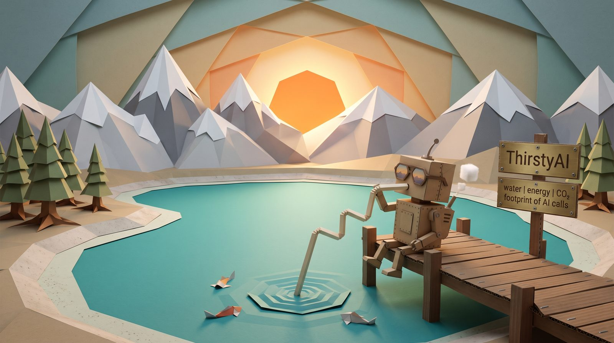

ThirstyAI calculator
water | energy | CO₂ footprint of AI calls — an estimate with ranges, not a measurement
Model
Models are grouped by size class. Models of similar size share the same energy estimate; closed models are represented by open models of comparable size.
Amount
output tokens
words
Region
reference year 2024
Advanced
Input tokens